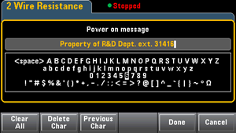

System Setup configures user preferences, sets the date and time, and sets a power-on message.
User Settings specifies user preferences that control how you interact with the instrument. These settings are stored in non-volatile memory and can be saved in a preferences (.prf) file.
Help Lang selects the help language for front panel use: English, French, German, Japanese, Korean, Russian, or Simplified Chinese. All messages, context-sensitive help, and help topics appear in the selected language. The softkey labels are always in English.
Number Format specifies how numbers are displayed on the front panel: 12,345.6 or 12.345,6. Other possibilities also exist. For example, you can use the space as a separator.
Disables or enables the click heard when a front panel key or softkey is pressed.
Also enables or disables the audible tone (Beeper On or Off) associated with the following features:
This non-volatile setting appears in several different menus on the front panel. Turning the beeper on or off in one menu affects all of the other menus and functions. For example, turning the beeper off for probe hold, also turns the beeper off for limits, diode, continuity, and errors.
Display Options configures the display.
You can enable or disable the display, adjust the brightness (10 to 100%), enable or disable the screen saver, and pick a color scheme. If you turn off the display, press any front panel key to turn it on again.
By default, the screen saver turns off and blanks the screen after eight hours of inactivity. You may disable this screen saver from the front panel only.
The display is enabled when power is cycled, after an instrument reset (*RST), or when you return to local (front panel) operation. Press the [Local] key or execute the IEEE-488 GTL (Go To Local) command from the remote interface to return to the local state.
SCPI ID determines the instrument's response to a *IDN? query. Choices for each DMM model are:
Choices above with no prefix (34460A, for example) return Keysight Technologies as the manufacturer. Choices above with an AT or HP prefix, return Agilent Technologies or Hewlett Packard, respectively, as the manufacturer. These choices are included for *IDN? compatibility with existing programs that expect *IDN? to return a particular manufacturer and model number.
If you have an older Agilent 34460A or 34461A and upgrade to the new (Keysight) firmware, your instrument continues to respond with the manufacturer name “Agilent”, not “Keysight” until you set the front panel SCPI ID to 34460A or 34461A, send the SYST:IDEN DEF command, or reset user preferences. After doing this, the instrument responds with “Keysight” as the manufacturer.
Important: In order to update the instrument firmware from remote, the model number in the *IDN? response must match the actual instrument model number. If you have changed the instrument's *IDN? response to another instrument, when attempting to update the firmware from remote, you will see this error: The instrument is not supported by this firmware file. To update the firmware, either update using the front panel procedure or, from remote, use SYSTem:IDENtify to set the *IDN? to match the actual model number, update the firmware, and then use SYSTem:IDENtify again to set the *IDN? response to the other model number.
Date / Time sets the instrument's real-time clock, which always uses a 24-hour format (00:00:00 to 23:59:59). There is no automatic setting of the date and time, such as to adjust for daylight savings time. Use the front panel arrow keys to set the year, month, day, hour, and minute.
Power on Message sets a message that is displayed when the instrument powers up and when you press [Help] > About.

Use the front panel arrows and [Select] key to select the letters. Then press Done to exit and save the message. The message will appear as shown below when you turn the instrument on or press [Help] > About.